Phase 1 - Project 2
Tomasz K, Tomasz Z, Margareta K
2015-12-09
- Project phase description
- Loading data
- General statistics for machines
- Statistics for machines on particular days and hours
- Time spent by visitors in particular weekdays
- The number of visitors in particular weekdays
- Time spent by visitors on machines in particular weekdays
- The number of visitors using machines in particular weekdays
- Time spent by visitors on particular weekdays and hours
- The number of visitors on particular weekdays and hours
- Time spent by visitors on machines for particular weekdays and hours
- The number of visitors using machines on particular weekdays and hours
- Time spent by visitors on particular hours
- The number of visitors on particular hours
- Median times spent on each machine on each day
- The number of visitors using each machine on each day
- Conclusions
Project phase description
In the first phase you should characterize types of interactions with different machines (exploratory analysis). Try to answer following questions:
- what is the average (or distribution) time of interaction with a given machine
- is there a difference in the time of interaction and weekday or hour
- what is the average (or distribution) length of playing in the space with stations
Loading data
load("C:\\Users\\Tomek\\Desktop\\Studia\\MSc\\Semestr 2\\Data mining\\Projekty\\4\\verySmallLogs.rda")
library(lubridate)
verySmallLogs$dayOfWeek = strftime(verySmallLogs$date,'%A')
verySmallLogs$dayOfWeekNumber = as.numeric(strftime(verySmallLogs$date,'%u'))
verySmallLogs$hour = substr(as.character(verySmallLogs$date), 12, 13);
verySmallLogs = verySmallLogs[order(verySmallLogs$dayOfWeekNumber), ]
verySmallLogs = verySmallLogs[!verySmallLogs$visitor == -1, ]General statistics for machines
Average times spent on a machine
library(ggplot2)
library(sqldf)
time_per_visitor <- sqldf('SELECT station, visitor, MAX(date) - MIN(date) as time FROM verySmallLogs GROUP BY station, visitor')
ggplot(data=time_per_visitor,aes(x=time))+geom_bar(binwidth=1)+xlim(0,1000)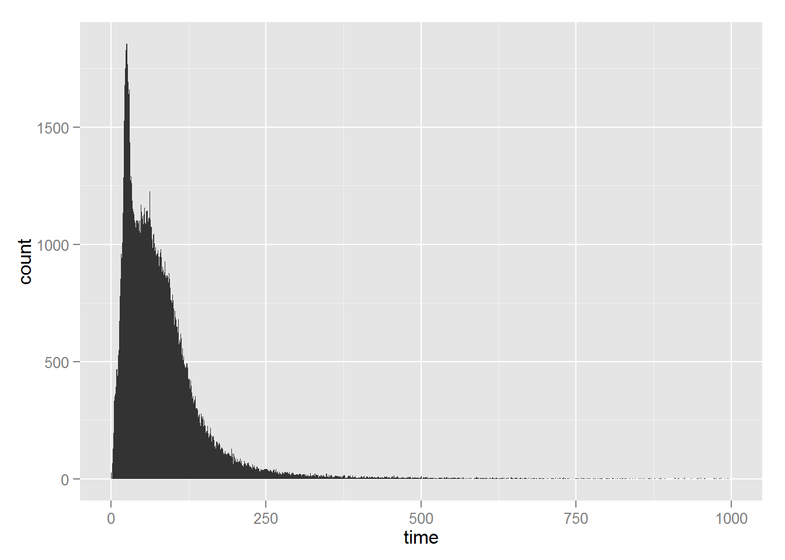
Time spent by visitors in stations
time_per_visitor = time_per_visitor[time_per_visitor$time < 500, ]
# Distribution of time per visitor in a station
summary(time_per_visitor$time)## Min. 1st Qu. Median Mean 3rd Qu. Max.
## 0.00 35.00 65.00 79.03 103.00 499.00# Boxplot of time per visitor in a station
boxplot(time_per_visitor$time, horizontal = TRUE)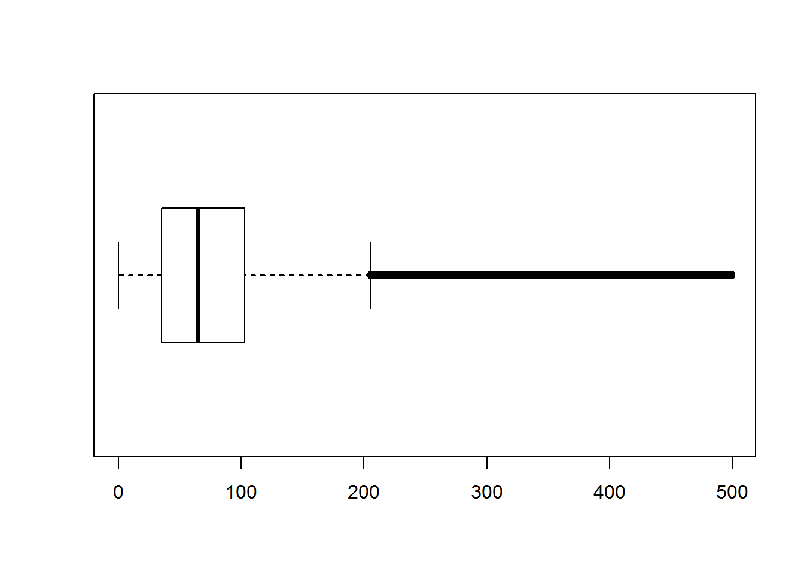
We can see that the vast majority of interactions last less than 200 seconds. Even though we eliminated the biggest outliers, the mean is not the best criterion to assess the time spent by visitors at each station. Because of this, we will use median in our further calculations.
Median time spent on each machine
machineStatistics <- sqldf('SELECT station, MEDIAN(time) as median_time, count(*) as numberOfVisitors FROM time_per_visitor GROUP BY station')
machineStatistics## station median_time numberOfVisitors
## 1 cnk05 64 14637
## 2 cnk10 60 16411
## 3 cnk18 62 18546
## 4 cnk19a 28 27369
## 5 cnk20 94 14622
## 6 cnk38 143 7212
## 7 cnk56 100 9249
## 8 cnk61 64 12245
## 9 cnk66 95 14254barplot(machineStatistics$median_time, main="Median time on each machine",
xlab="Machine", names.arg = machineStatistics$station)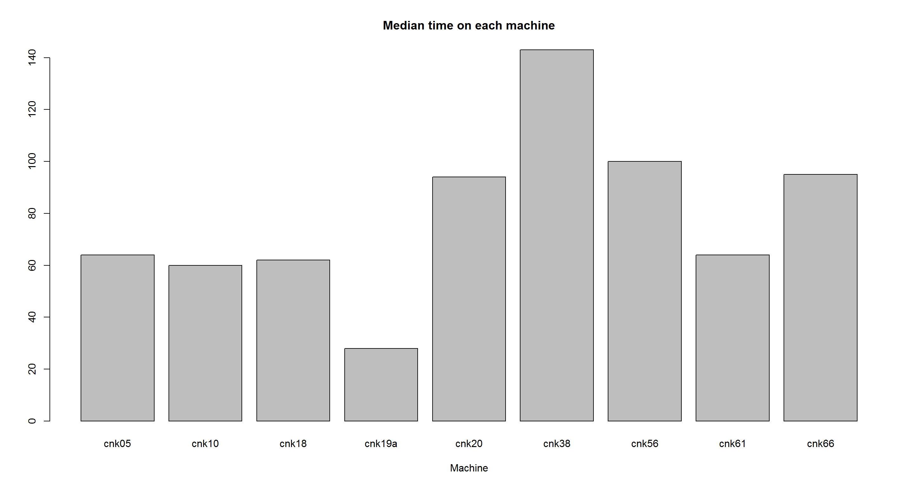
We can see that the biggest amount of time on average was spent on cnk38, the smallest on cnk19a.
Number of visitors on each machine
barplot(machineStatistics$numberOfVisitors, main="Number of visitors on each machine",
xlab="Machine", names.arg = machineStatistics$station)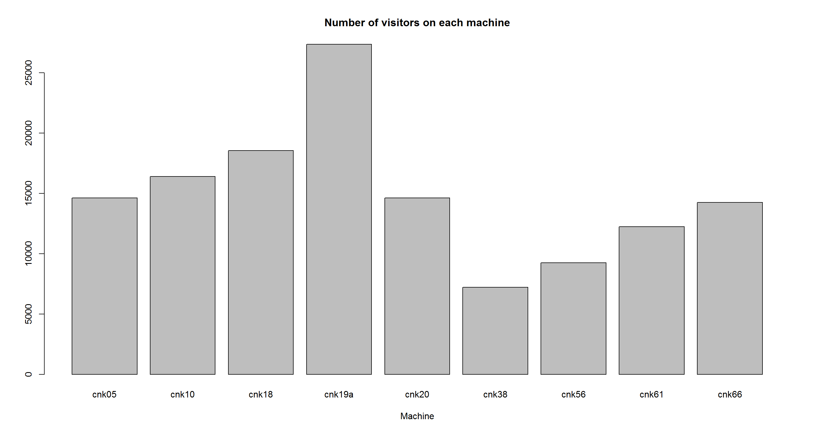
We can see that cnk19a was the most popular machine and cnk38 was the least popular one. This seems logical as these are the two machines which had the smallest and the biggest average time of interaction respectively. We can suspect that the small number of visitors using cnk38 comes from the fact that on average it was used the longest. The great number of visitors using cnk19a may come from the fact that on average it was used for a short time so many people could try it.
Statistics for machines on particular days and hours
time_per_day_visitor = sqldf('SELECT station, visitor, MAX(date) - MIN(date) as time, dayOfWeek, dayOfWeekNumber FROM verySmallLogs GROUP BY station, visitor, dayOfWeekNumber')
time_per_day_visitor = time_per_day_visitor[time_per_day_visitor$time < 500, ]
# Median time and the number of visitors per machine and weekday
machineStatisticsWeekday <- sqldf('SELECT station, dayOfWeek, dayOfWeekNumber, AVG(time) as median_time, count(*) as numberOfVisitors FROM time_per_day_visitor GROUP BY station, dayOfWeekNumber')
# Average time and the number of visitors per weekday
weekdayStatistics = sqldf('SELECT dayOfWeek, dayOfWeekNumber, AVG(median_time) as average_time_per_day, sum(numberOfVisitors) as numberOfVisitorsPerDay FROM machineStatisticsWeekday GROUP BY dayOfWeekNumber')
time_per_day_and_hour_visitor = sqldf('SELECT station, visitor, MAX(date) - MIN(date) as time, dayOfWeek, dayOfWeekNumber, hour FROM verySmallLogs GROUP BY station, visitor, dayOfWeekNumber, hour')
time_per_day_and_hour_visitor = time_per_day_and_hour_visitor[time_per_day_and_hour_visitor$time < 500, ]
# Median time and the number of visitors per machine, weekday and hour
machineStatisticsWeekdayHour <- sqldf('SELECT station, dayOfWeek, dayOfWeekNumber, hour, AVG(time) as median_time, count(*) as numberOfVisitors FROM time_per_day_and_hour_visitor GROUP BY station, dayOfWeekNumber, hour')
# Average time and the number of visitors per weekday and hour
weekdayHourStatistics = sqldf('SELECT dayOfWeek, dayOfWeekNumber, hour, AVG(median_time) as average_time_per_day_hour, sum(numberOfVisitors) as numberOfVisitors FROM machineStatisticsWeekdayHour GROUP BY dayOfWeekNumber, hour')
# Average time and the number of visitors per hour
hourStatistics = sqldf('SELECT hour, AVG(average_time_per_day_hour) as average_time_per_hour, sum(numberOfVisitors) as numberOfVisitorsPerHour FROM weekdayHourStatistics GROUP BY hour')
# Statistics per day and machine
machineStatisticsWeekday = machineStatisticsWeekday[, !(colnames(machineStatisticsWeekday) %in% c("dayOfWeekNumber"))]
# Statistics per day
weekdayStatistics = weekdayStatistics[, !(colnames(weekdayStatistics) %in% c("dayOfWeekNumber"))]
time_per_day_and_hour_visitor = time_per_day_and_hour_visitor[order(time_per_day_and_hour_visitor$dayOfWeekNumber), ]
# Statistics per day, hour and machine
machineStatisticsWeekdayHour = machineStatisticsWeekdayHour[, !(colnames(machineStatisticsWeekdayHour) %in% c("dayOfWeekNumber"))]
# Statistics per day, hour
weekdayHourStatistics = weekdayHourStatistics[, !(colnames(weekdayHourStatistics) %in% c("dayOfWeekNumber"))]Time spent by visitors in particular weekdays
weekdayStatistics## dayOfWeek average_time_per_day numberOfVisitorsPerDay
## 1 poniedziałek 38.01984 66
## 2 wtorek 84.22520 21833
## 3 środa 83.91517 21286
## 4 czwartek 83.54537 22644
## 5 piątek 86.87673 23981
## 6 sobota 94.27147 23994
## 7 niedziela 95.95640 21979# Distribution of time per weekday
summary(weekdayStatistics$average_time_per_day)## Min. 1st Qu. Median Mean 3rd Qu. Max.
## 38.02 83.73 84.23 80.97 90.57 95.96# Boxplot of time per weekday
boxplot(weekdayStatistics$average_time_per_day, horizontal = TRUE)
# Barplot of the time per weekday
barplot(weekdayStatistics$average_time_per_day, main="Average time per weekday",
xlab="Hours in a day", names.arg = weekdayStatistics$dayOfWeek)
We can observe that slightly more time is spent on average during the weekends.
The number of visitors in particular weekdays
weekdayStatistics## dayOfWeek average_time_per_day numberOfVisitorsPerDay
## 1 poniedziałek 38.01984 66
## 2 wtorek 84.22520 21833
## 3 środa 83.91517 21286
## 4 czwartek 83.54537 22644
## 5 piątek 86.87673 23981
## 6 sobota 94.27147 23994
## 7 niedziela 95.95640 21979# Distribution of the number of visitors in particular weekdays
summary(weekdayStatistics$numberOfVisitorsPerDay)## Min. 1st Qu. Median Mean 3rd Qu. Max.
## 66 21560 21980 19400 23310 23990# Boxplot of the number of visitors in particular weekdays
boxplot(weekdayStatistics$numberOfVisitorsPerDay, horizontal = TRUE)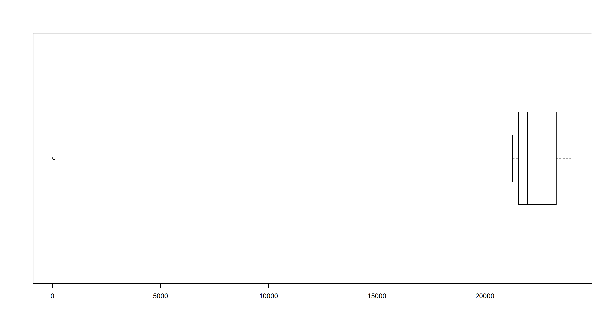
# Barplot of the number of visitors in particular weekdays
barplot(weekdayStatistics$numberOfVisitorsPerDay, main="The number of visitors per day",
xlab="Hours in a day", names.arg = weekdayStatistics$dayOfWeek)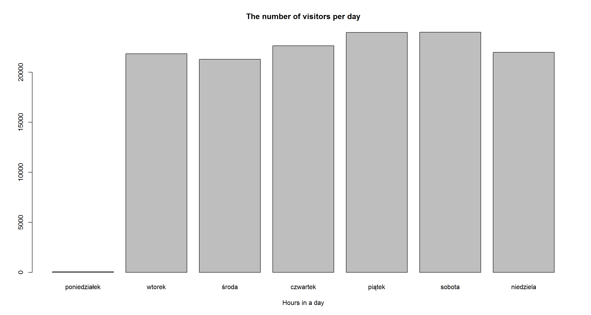
We can easily observe that the centre is closed on Mondays. The number of visitors is not 0 though. We might guess that some routine tests are performed then.
Time spent by visitors on machines in particular weekdays
machineStatisticsWeekday## station dayOfWeek median_time numberOfVisitors
## 1 cnk05 poniedziałek 65.66667 9
## 2 cnk05 wtorek 65.81658 2328
## 3 cnk05 środa 65.98253 2232
## 4 cnk05 czwartek 64.78664 2395
## 5 cnk05 piątek 68.72571 2614
## 6 cnk05 sobota 74.47973 2714
## 7 cnk05 niedziela 77.19871 2481
## 8 cnk10 poniedziałek 66.37500 8
## 9 cnk10 wtorek 64.75401 2683
## 10 cnk10 środa 64.30894 2583
## 11 cnk10 czwartek 64.68556 2805
## 12 cnk10 piątek 68.13069 2946
## 13 cnk10 sobota 78.81610 2931
## 14 cnk10 niedziela 85.37187 2595
## 15 cnk18 poniedziałek 76.33333 9
## 16 cnk18 wtorek 67.77837 3023
## 17 cnk18 środa 65.38881 2968
## 18 cnk18 czwartek 66.76990 3103
## 19 cnk18 piątek 66.58020 3323
## 20 cnk18 sobota 72.76599 3252
## 21 cnk18 niedziela 74.64101 3014
## 22 cnk19a poniedziałek 15.00000 7
## 23 cnk19a wtorek 41.99814 4298
## 24 cnk19a środa 45.72778 4162
## 25 cnk19a czwartek 42.71735 4525
## 26 cnk19a piątek 40.82533 4855
## 27 cnk19a sobota 39.81319 5064
## 28 cnk19a niedziela 42.22100 4561
## 29 cnk20 poniedziałek 42.28571 7
## 30 cnk20 wtorek 94.49159 2378
## 31 cnk20 środa 94.55295 2342
## 32 cnk20 czwartek 95.31029 2459
## 33 cnk20 piątek 96.69148 2606
## 34 cnk20 sobota 100.92329 2581
## 35 cnk20 niedziela 103.66861 2396
## 36 cnk38 poniedziałek 16.00000 6
## 37 cnk38 wtorek 136.16891 1190
## 38 cnk38 środa 131.18940 1151
## 39 cnk38 czwartek 132.66288 1234
## 40 cnk38 piątek 137.07858 1298
## 41 cnk38 sobota 151.81363 1277
## 42 cnk38 niedziela 149.82902 1199
## 43 cnk56 poniedziałek 0.00000 5
## 44 cnk56 wtorek 123.77663 1549
## 45 cnk56 środa 123.13829 1533
## 46 cnk56 czwartek 122.94419 1505
## 47 cnk56 piątek 129.46411 1644
## 48 cnk56 sobota 128.60886 1626
## 49 cnk56 niedziela 131.52683 1528
## 50 cnk61 poniedziałek 21.14286 7
## 51 cnk61 wtorek 75.68224 2055
## 52 cnk61 środa 77.87494 2023
## 53 cnk61 czwartek 75.15545 2213
## 54 cnk61 piątek 82.20384 2188
## 55 cnk61 sobota 101.01846 2058
## 56 cnk61 niedziela 101.53438 1847
## 57 cnk66 poniedziałek 39.37500 8
## 58 cnk66 wtorek 87.56033 2329
## 59 cnk66 środa 87.07286 2292
## 60 cnk66 czwartek 86.87609 2405
## 61 cnk66 piątek 92.19067 2507
## 62 cnk66 sobota 100.20393 2491
## 63 cnk66 niedziela 97.61620 2358# Distribution of time per station and weekday
summary(machineStatisticsWeekday$median_time)## Min. 1st Qu. Median Mean 3rd Qu. Max.
## 0.00 65.09 76.33 80.97 100.60 151.80# Boxplot of time per station and weekday
boxplot(machineStatisticsWeekday$median_time, horizontal = TRUE)
The number of visitors using machines in particular weekdays
# Distribution of the number of visitors per station and weekday
summary(machineStatisticsWeekday$numberOfVisitors)## Min. 1st Qu. Median Mean 3rd Qu. Max.
## 5 1516 2342 2155 2698 5064# Boxplot of the number of visitors per station and weekday
boxplot(machineStatisticsWeekday$numberOfVisitors, horizontal = TRUE)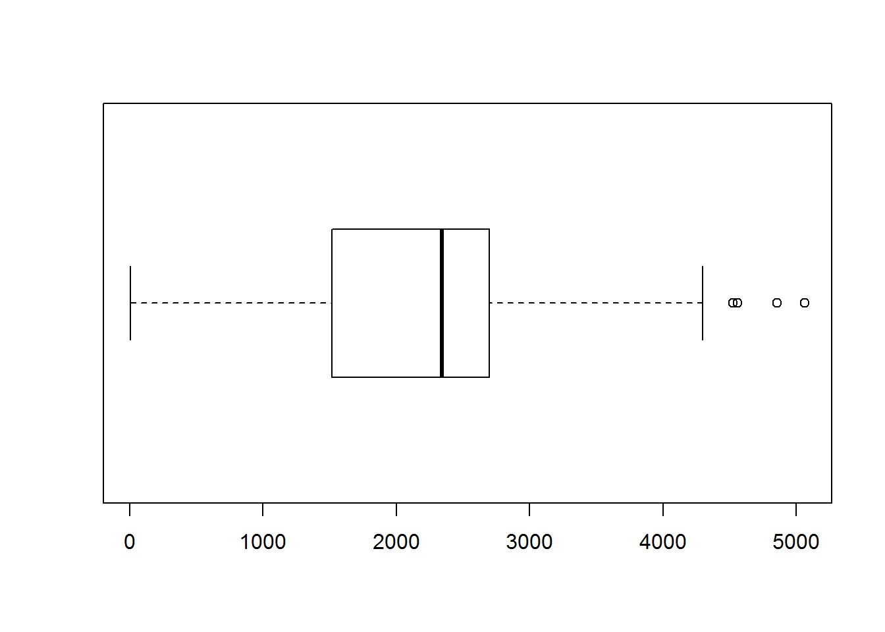
Time spent by visitors on particular weekdays and hours
weekdayHourStatistics## dayOfWeek hour average_time_per_day_hour
## 1 poniedziałek 08 0.0000000
## 2 poniedziałek 09 151.0000000
## 3 poniedziałek 10 113.2500000
## 4 poniedziałek 11 87.0000000
## 5 poniedziałek 12 1.7222222
## 6 poniedziałek 13 6.3333333
## 7 poniedziałek 14 36.8333333
## 8 poniedziałek 15 51.7000000
## 9 poniedziałek 16 96.0000000
## 10 poniedziałek 18 0.0000000
## 11 wtorek 07 0.0000000
## 12 wtorek 08 0.3796296
## 13 wtorek 09 78.7448435
## 14 wtorek 10 76.1174113
## 15 wtorek 11 81.9427836
## 16 wtorek 12 85.4017119
## 17 wtorek 13 85.2519688
## 18 wtorek 14 84.2780378
## 19 wtorek 15 81.9942799
## 20 wtorek 16 81.4607213
## 21 wtorek 17 81.5169624
## 22 wtorek 18 30.2700000
## 23 środa 07 0.0000000
## 24 środa 08 1.5811966
## 25 środa 09 83.8585544
## 26 środa 10 75.7336446
## 27 środa 11 79.8291307
## 28 środa 12 83.4993800
## 29 środa 13 83.0819404
## 30 środa 14 85.6648567
## 31 środa 15 81.4062346
## 32 środa 16 81.0775465
## 33 środa 17 87.6612975
## 34 środa 18 21.6759259
## 35 środa 19 53.0000000
## 36 środa 20 103.8333333
## 37 środa 21 47.8250000
## 38 czwartek 07 350.0000000
## 39 czwartek 08 0.9230769
## 40 czwartek 09 72.2213763
## 41 czwartek 10 76.9277575
## 42 czwartek 11 82.2857353
## 43 czwartek 12 81.8046518
## 44 czwartek 13 85.2259887
## 45 czwartek 14 83.6993547
## 46 czwartek 15 81.0177595
## 47 czwartek 16 80.6800195
## 48 czwartek 17 80.4779094
## 49 czwartek 18 36.9253968
## 50 czwartek 19 35.0000000
## 51 czwartek 20 34.0000000
## 52 piątek 07 0.0000000
## 53 piątek 08 2.4624339
## 54 piątek 09 62.2565650
## 55 piątek 10 77.0860717
## 56 piątek 11 79.0144042
## 57 piątek 12 84.6683699
## 58 piątek 13 87.2636831
## 59 piątek 14 91.3014948
## 60 piątek 15 88.0077419
## 61 piątek 16 83.9466942
## 62 piątek 17 87.1671581
## 63 piątek 18 99.9105407
## 64 piątek 19 36.0000000
## 65 piątek 21 169.0000000
## 66 sobota 09 1.2746439
## 67 sobota 10 81.4742302
## 68 sobota 11 86.3657180
## 69 sobota 12 89.0945405
## 70 sobota 13 93.0396499
## 71 sobota 14 92.8233557
## 72 sobota 15 93.2070122
## 73 sobota 16 91.2623413
## 74 sobota 17 94.3403035
## 75 sobota 18 92.7291700
## 76 sobota 19 82.5500000
## 77 niedziela 09 0.1623932
## 78 niedziela 10 88.1791494
## 79 niedziela 11 92.1851203
## 80 niedziela 12 91.7231302
## 81 niedziela 13 92.2271813
## 82 niedziela 14 93.2585552
## 83 niedziela 15 97.5195703
## 84 niedziela 16 92.3876466
## 85 niedziela 17 95.3395987
## 86 niedziela 18 94.8287399
## 87 niedziela 19 56.1111111
## numberOfVisitorsPerWeekDayAndHour
## 1 18
## 2 4
## 3 7
## 4 5
## 5 10
## 6 10
## 7 19
## 8 6
## 9 1
## 10 1
## 11 18
## 12 92
## 13 230
## 14 1912
## 15 3022
## 16 3334
## 17 3148
## 18 3320
## 19 3507
## 20 3007
## 21 1547
## 22 15
## 23 1
## 24 107
## 25 388
## 26 1779
## 27 3039
## 28 3436
## 29 3260
## 30 3078
## 31 3219
## 32 2881
## 33 1347
## 34 21
## 35 1
## 36 13
## 37 26
## 38 1
## 39 102
## 40 448
## 41 2078
## 42 3139
## 43 3422
## 44 3271
## 45 3383
## 46 3443
## 47 3077
## 48 1549
## 49 32
## 50 3
## 51 1
## 52 1
## 53 119
## 54 510
## 55 1915
## 56 3268
## 57 3614
## 58 3579
## 59 3404
## 60 3533
## 61 3369
## 62 1910
## 63 112
## 64 3
## 65 1
## 66 113
## 67 424
## 68 2094
## 69 3181
## 70 3374
## 71 3423
## 72 3548
## 73 3525
## 74 3225
## 75 1963
## 76 35
## 77 107
## 78 355
## 79 2007
## 80 3098
## 81 3251
## 82 3309
## 83 3315
## 84 3246
## 85 2630
## 86 1384
## 87 20# Distribution of the time per weekday and hour
summary(weekdayHourStatistics$average_time_per_day_hour)## Min. 1st Qu. Median Mean 3rd Qu. Max.
## 0.00 52.35 81.99 72.44 90.18 350.00# Boxplot of the time per weekday and hour
boxplot(weekdayHourStatistics$average_time_per_day_hour, horizontal = TRUE)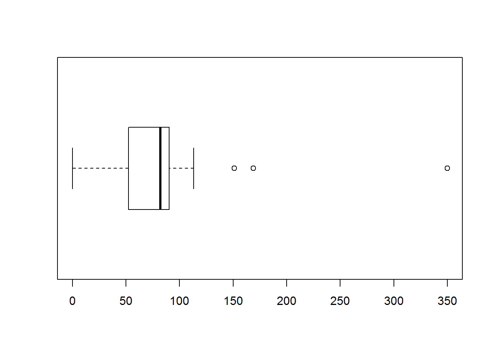
The number of visitors on particular weekdays and hours
# Distribution of the number of visitors on particular weekdays and hours
summary(weekdayHourStatistics$average_time_per_day_hour)## Min. 1st Qu. Median Mean 3rd Qu. Max.
## 0.00 52.35 81.99 72.44 90.18 350.00# Boxplot of the number of visitors on particular weekdays and hours
boxplot(weekdayHourStatistics$average_time_per_day_hour, horizontal = TRUE)
Time spent by visitors on machines for particular weekdays and hours
# Distribution of the time per station, weekday and hour
summary(machineStatisticsWeekdayHour$median_time)## Min. 1st Qu. Median Mean 3rd Qu. Max.
## 0.00 43.59 71.56 70.95 95.86 350.00# Boxplot of the time per station, weekday and hour
boxplot(machineStatisticsWeekdayHour$median_time, horizontal = TRUE)
The number of visitors using machines on particular weekdays and hours
# Distribution of the number of visitors using machines on particular weekdays and hours
summary(machineStatisticsWeekdayHour$median_time)## Min. 1st Qu. Median Mean 3rd Qu. Max.
## 0.00 43.59 71.56 70.95 95.86 350.00# Boxplot of the number of visitors using machines on particular weekdays and hours
boxplot(machineStatisticsWeekdayHour$median_time, horizontal = TRUE)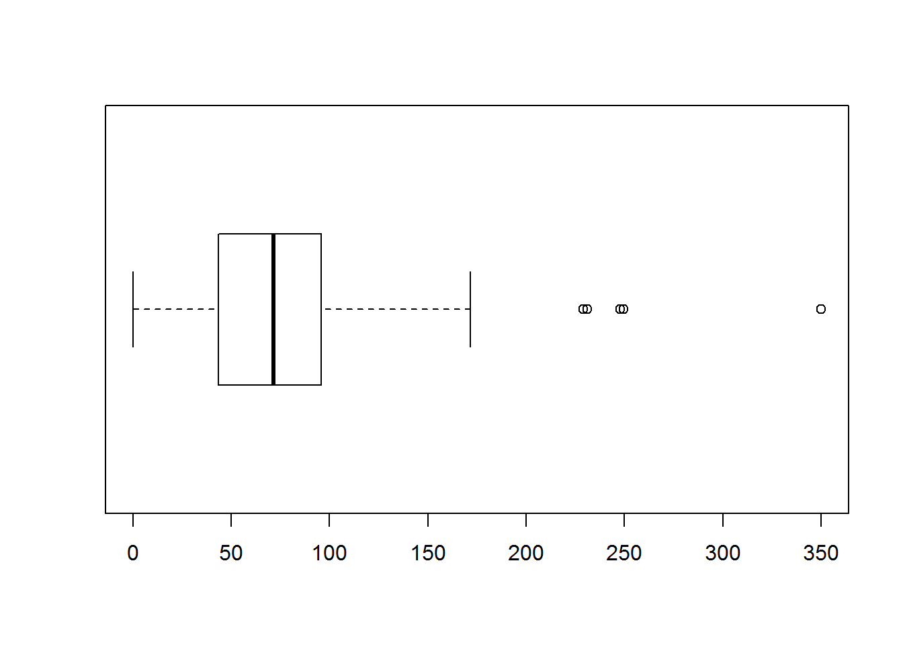
Time spent by visitors on particular hours
hourStatistics## hour average_time_per_hour numberOfVisitorsPerHour
## 1 07 87.500000 21
## 2 08 1.069267 438
## 3 09 64.216911 1800
## 4 10 84.109752 8470
## 5 11 84.088985 16574
## 6 12 73.987715 20095
## 7 13 76.060535 19893
## 8 14 81.122713 19936
## 9 15 82.121800 20571
## 10 16 86.687853 19106
## 11 17 87.750538 12208
## 12 18 53.762825 3528
## 13 19 52.532222 62
## 14 20 68.916667 14
## 15 21 108.412500 27# Distribution of the time per hour
summary(hourStatistics$average_time_per_hour)## Min. 1st Qu. Median Mean 3rd Qu. Max.
## 1.069 66.570 81.120 72.820 85.400 108.400# Boxplot of the time per hour
boxplot(hourStatistics$average_time_per_hour, horizontal = TRUE)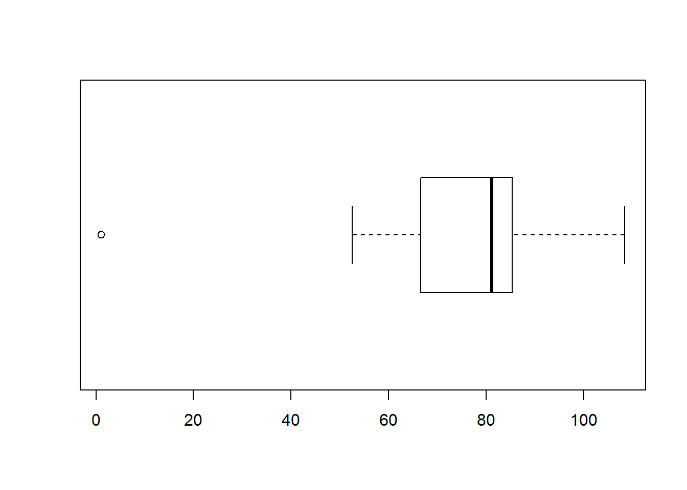
# Barplot of the average times per hour
barplot(hourStatistics$average_time_per_hour, main="Average times per hour",
xlab="Hours in a day", names.arg = hourStatistics$hour)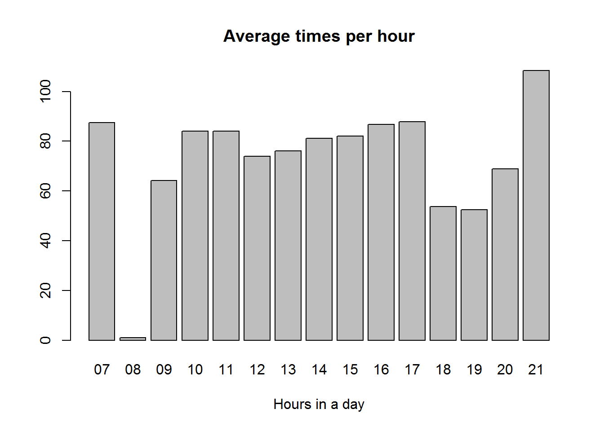
The number of visitors on particular hours
# Distribution of the number of visitors per hour
summary(hourStatistics$numberOfVisitorsPerHour)## Min. 1st Qu. Median Mean 3rd Qu. Max.
## 14 250 8470 9516 19500 20570# Boxplot of the number of visitors per hour
boxplot(hourStatistics$numberOfVisitorsPerHour, horizontal = TRUE)
# Barplot of the number of visitors per hour
barplot(hourStatistics$numberOfVisitorsPerHour, main="The number of visitors per hour",
xlab="Hours in a day", names.arg = hourStatistics$hour)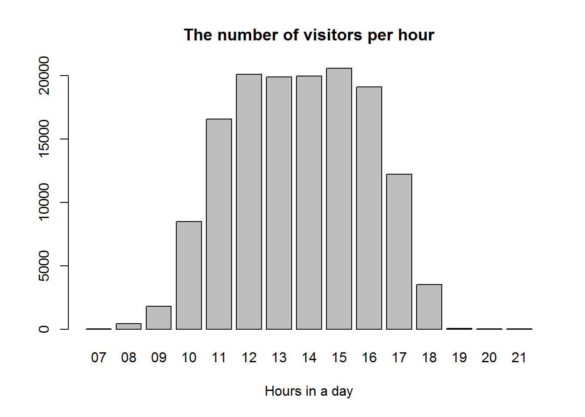
We can observe that the number of visitors is the smallest in the morning and in the evening and the biggest durring the day, especially in the afternoon.
Median times spent on each machine on each day
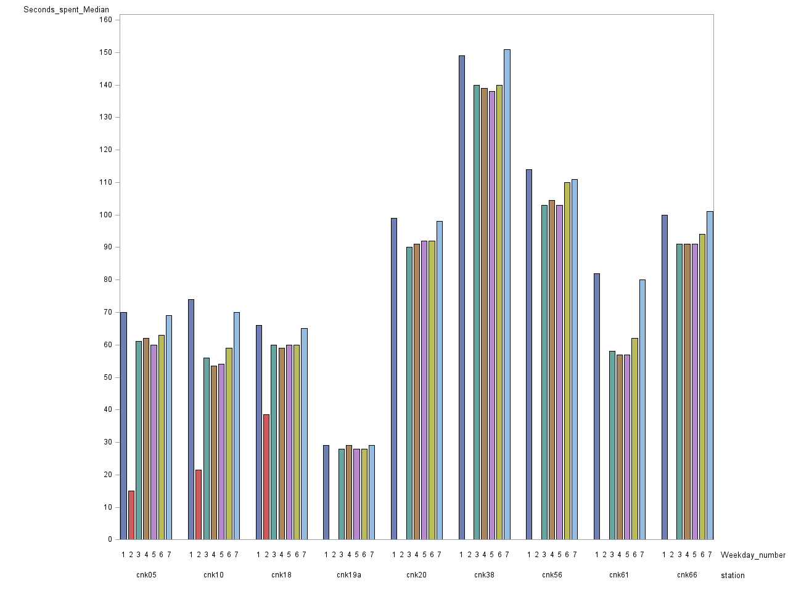
The number of visitors using each machine on each day
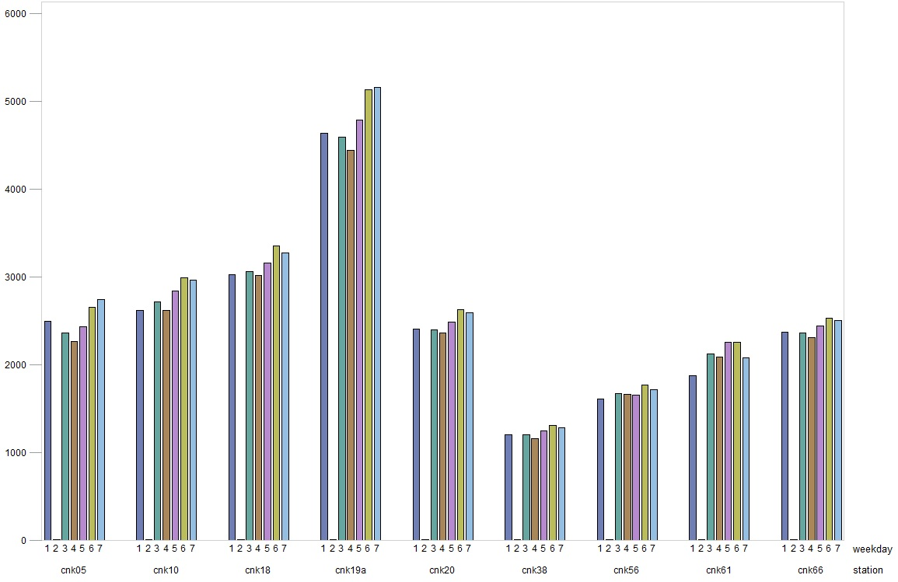
Days of the week do not influence significantly the average time spent on a machine and the number of visitors using the machine. The machines ‘cnk19a’ and ‘cnk38’ stand out of the crowd every day.
Conclusions
The majority of interactions last less than 200 seconds. There are few observations (outliers) with great times of interaction which affect the mean so the median is a better criterion to use when analyzing this data.
The centre is closed every day between 10 PM and 7 AM and is closed completely on Mondays. There are, however, some technical works performed then, so the number of registered visitors is not zero. We can see that ‘cnk19a’ is the most popular machine and ‘cnk38’ is the least popular one. On the other hand, the time spent on ‘cnk19a’ is the shortest and the time spent on ‘cnk38’ is on average the longest. We might suspect that ‘cnk38’ is usually used for a long time so people are blocking it. The machine ‘cnk19a’ is tried very often but only for a short time - maybe it’s boring? If so, we could buy some more copies of the most popular machines, especially ‘cnk38’ so that more people can use it.
The number of visitors is the smallest in the morning and in the evening and the biggest durring the day, especially in the afternoon. The number of visitors does not differ significantly between days (except Monday, where the centre is closed).